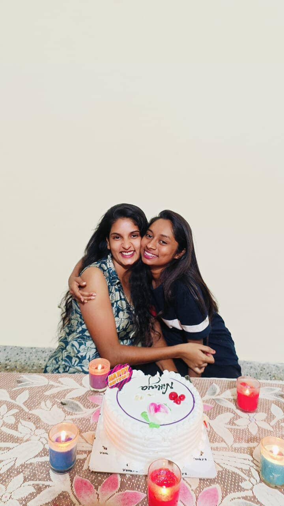
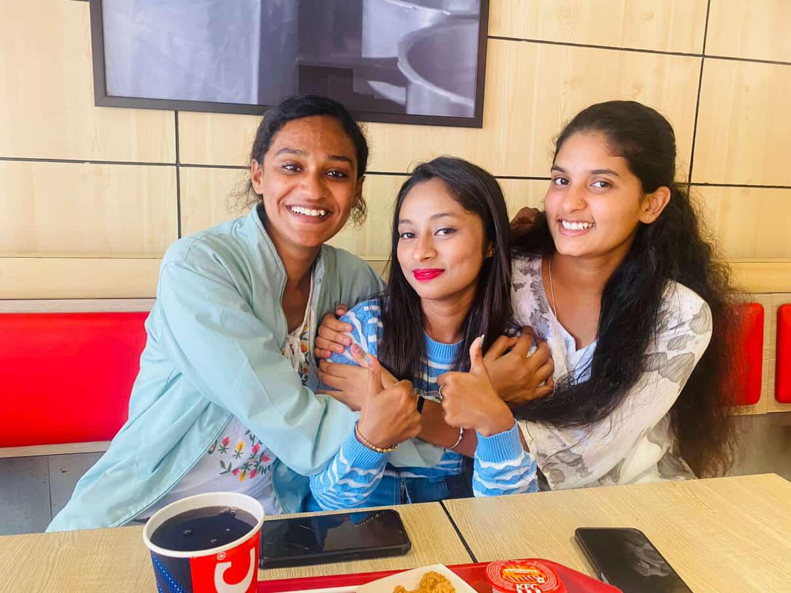
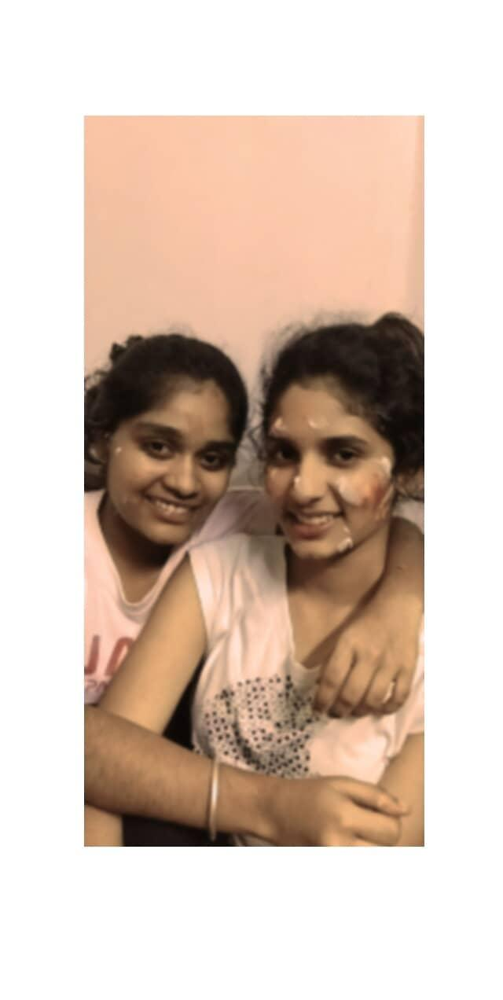
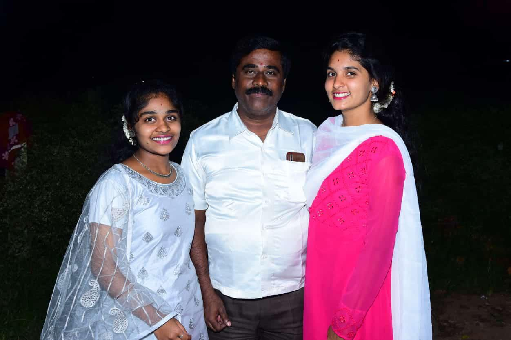

A Memory Preserved
The Early Magic
Looking back at the moments that started it all. A day filled with innocent joy, pure smiles, and the beginning of a beautiful journey.
Growing Up
Sweet Memories
Candles blown, wishes made, and surrounded by the people who matter most. Every year adding a little more brilliance to your story.


Finding Yourself
A Beautiful Era
Stepping into your own. A birthday marked by unforgettable laughter, bolder dreams, and the undeniable glow of confidence.
The Latest Milestone
Just Yesterday
The culmination of all the years before it. A celebration of who you are right now, standing on the edge of greatness.

Finding Yourself
A Beautiful Era
Stepping into your own. A birthday marked by unforgettable laughter, bolder dreams, and the undeniable glow of confidence.